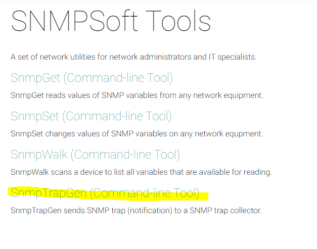

1. Autores
-
Crysthel Aparicio Bonilla
-
2020-18-1 20:00 CST
-
Luis Enrique Cabrera Oyuela
-
2020-18-1 20:00 CST
-
Carlos Casco Valle
-
2020-18-1 20:00 CST
-
André Velásquez
-
2020-18-1 20:00 CST
-
Oswal Fuentes
-
2020-18-1 20:00 CST
-
Mario Sánchez
-
2020-18-1 20:00 CST
2. Introducción
2.1. Un poco de Historia
Vamos a darle un vistazo al protocolo SNMP. Y para eso deberíamos irnos hasta allá por los 80. Por aquel entonces Internet era todavía joven y todavía sin tanto comercio. La seguridad era algo de lo que se preocupaban otros, ya que para la mayor parte de la gente el problema era mantener el asunto "up and running" y a todas esas cajas conectadas contentas. Por lo general, para cada administrador de sistemas esto significaba manejar docenas de "routers", "switches" y ordenadores, muchos de los cuales estaban demasiado lejos como para llegar al teclado, o ni siquiera tenían teclado. Hacer un Telnet era una buena solución, pero no todas esas cajas tenían la suficiente inteligencia como para proporcionar una "shell".
Sin embargo era importante gestionar esas redes, es decir, ocuparse de temas como:
-
La monitorización de las alarmas de los equipos y sus averías.
-
La configuración y cambios en los equipos.
-
La utilización de la red por parte de los equipos (usuarios), así como obtener estadísticas.
-
El rendimiento de la red
-
Y por supuesto algo de seguridad. Al menos, proteger la red, los elementos y la gestión de los equipos de accesos no deseados, y la obtención de datos privados.
En Agosto de 1988, la especificación de SNMP aparece y rápidamente es adoptada por el creciente mundo de las redes. Los complejos sistemas de gestión (como HP Openview) se podían desarrollar utilizando sólo SNMP como sistema de comunicación. El propósito inicial del SNMP era integrar la gestión de diferentes tipos de redes en un diseño simple que sobrecarga un poco la gestión de red.
2.1.1. Definición del Problema
El motivo de esta investigación es contemplar el uso y aplicación del protocolo SNMP en algún proyecto (ya sea su implementación en un sistema ya existente, o en la planificación de uno), ver sus fortalezas y debilidades… Es de suma importancia estar al tanto de todos nuestros dispositivos de red. Conocer el estado actual de cada uno de nuestros equipos para ver si está ocurriendo algo no debido o inesperado, y encontrar solución a problemas al instante es crucial. La administración de calidad de una red nos permite tomar acciones que nos lleven a una solución.
2.1.2. Elementos
Hay otra pieza importante en este entorno, y es la base de datos donde se encuentra toda la información que se gestiona. Esta base de datos se denomina MIB (Management Information Base).
Por lo tanto, se pueden distinguir los siguientes elementos:
-
Agente de gestión.
-
Gestor
-
Objeto gestionado
-
Protocolo de gestión.
2.1.3. Mensajes
3. Herramientas
3.1. PRTG

3.1.1. Acerca de la Herramienta
Aquellos administradores de sistemas que trabajan en grandes entornos de TI, con miles de dispositivos y sistemas en múltiples ubicaciones, necesitan una forma fácil de obtener la visibilidad y el control de unas infraestructuras cada vez más complejas.
PRTG Network Monitor simplifica la supervisión al tiempo que garantiza el rendimiento, la claridad y la facilidad de uso.
3.1.2. ¿Por qué utilizamos esta herramienta?
Primero que nada vamos a definir qué son los Traps SNMP: Por lo general los dispositivos como routers, arreglos, switch, servidores de aplicaciones, etc… contienen agente SNMP que la función principal es enviar alarmas (traps) cuando ocurren ciertos eventos como las siguientes: * Almacenamiento insuficiente en disco * Se cae una interfaz * Se daña un disco “broken” * La carga de procesador es alta * Falla una fuente de poder, etc.
Entonces podemos decir que los traps son mensajes no solicitados que alertan al administrador de SNMP sobre una condición o un evento en la red.
3.1.3. Instalación
-
Ir al url: https://www.es.paessler.com/download/prtg-download?download=1
-
Esperando Inicialización
-
Iniciar sesion con las credenciales por defecto
prgtadmin para user y password
Requisitos mínimos para completar este tutorial:
-
RPTG (Nuestro administrador SNMP)
-
SnmpTrapGen (Agente SNMP que enviará los eventos (traps))
-
Vamos a configurar un dispositivo con su nombre: Trap SNMP.
-
Configurar Ip: 127.0.0.1
context: “disk broken” es nuestro evento en nuestra red que deberá ser detectado por los el administrador de SNMP Los siguientes campos quedan como default.
-
Vamos a agregar un sensor para que sea el administrador de SNMP.
Lo buscamos como trap
-
Dejamos sus campos por default
Su puerto 162 y ahi tiene su Base de Datos donde se guardan los eventos en la red.
-
Sensor creado existosamente y aqui podrá escuchar las alertas que van llegando
-
Presionamos en escanear ahora
3.1.4. Filtro de Agente al Administrador
-
Dentro del filtro nos vamos a configuración
-
Configuración del filtro con su llave bindings[text] que evaluará los datos
-
Agregamos el filtro: bindings["disk broken"]
Al hacer match se va a alertar nuestro sensor, si esta recibiendo un fallo en algun disco del sistema, ya sea un arreglo o un servidor
3.1.5. Configurar Agente
En el se enviaran los traps hacia nuestro servidor.
-
Ir al url: https://ezfive.com/snmpsoft-tools/ Y descargar el siguiente:
 -
Vamos a la consola a enviar los traps a RPTG, copiemos el siguiente comando 3 veces:
# SnmpTrapGen.exe -r:127.0.0.1 -v:3 -to:.1.3.6.1.2.1.1.4.0 -cn:"disk broken"-
Ve a RPTG y Escanea para recibir la alerta
-
Alertas en TRAP
3.2. NAGIOS Core
3.3. Acerca de la Herramienta

NAGIOS core es un software gratis open-source lanzado en 2002 el cual se enfoca en monitorear sistemas, redes, e infraestructura. Nagios ofrece monitoreo y servicios de alerta para servidores, switches, aplicaciones, y servicios. Nagios Core se especializa en tener bitácoras de dispositivos conectados en la red, proveer un sistema de alerta en caso de que una falla se presente, y proporcionar una manera gráfica y resumida al administrador de red.
Nagios Core fue creado apartir de C y en el día moderno tiene un repositorio de Github:
3.3.1. Caracteristicas
-
Uso: Esta herramienta nos permite mostrar y monitorear dispositivos en la red:
-
PCs
-
Switches
-
Routers
-
Impresoras
-
etc… (cualquier otro dispositivo con disponibilidad SNMP)
-
-
Funcionalidades: Nagios Core ofrece diferentes funcionalidades al momento de querer monitorear una red:
-
Monitoreo Integeral
-
Capacidades para monitorear aplicaciones, servicios, sistemas operativos, protocolos de red, métricas de sistema y componentes de infraestructura con una herramienta única.
-
-
Visibilidad
-
Vista centralizada de todo la infraestructura de la red.
-
Detección rápida de apagones de red.
-
Alerta de dispositivo puede ser notificada via correo o mensaje de texto.
-
-
Remedio de Problemas
-
Los controladores de eventos permiten el reinicio automático de aplicaciones y servicios fallidos.
-
-
Arquitectura extendible
-
Cientos de addons desarrollados por la comunidad que amplían la funcionalidad de NAGIOS.
-
-
-
Arquitectura: La arquitectura de NAGIOS core esta construida apartir de un servidor/agente(s).
-
Usualmente en una red, un servidor NAGIOS esta corriendo en un host, y cualquier complemento instalado puede interactuar con hosts remotos o locales que ocupan ser monitoreados.
-
Los complementos instalados envían información al Scheduler, el cual lo muestra todo en un GUI.
-
3.4. Funcionamiento
En esta sección se explorarán los diferentes usos de la versión en línea de NAGEOS CORE y la versión Windows.
3.4.1. NAGIOS CORE versión web
-
Acceder la página principal de NAGIOS:
Hacer clic en "Try an Online demo"
-
Hacer clic en "Login to Nagios Core" — por motivos de explicación se utilizará el acceso de Administrador.
-
Ingresar las credenciales correctas:
-
Username: nagiosadmin
-
Password: nagiosadmin
Hacer clic en "Sign in"
-
-
Hacer clic en "Hosts"

3.4.1.1. Pruebas en NAGEOS versión en línea
-
Hacer clic en cualquier host.
-
Analizar la información presentada.
En este host elegido podemos notar varios elementos:
-
Nombre de host: Log-Server.nagios.local
-
Estado del host: UP
-
Ultima actualización: 09-18-2020 15:21:42 ( 0d 0h 0m 6s ago)
-
… entre otros.
En la parte derecha de la pantalla se puede notar la variedad de comandos que el Administrador de Red puede realizar tales como:
-
Buscar el host en el mapa.
-
Programar tiempo de inactividad para el host.
-
Activar o desactivar alertas o notificaciones del host.
-
… entre otros.
-
-
Programar tiempo de inactividad.
-
Ingresar la información a seguir:
Pop up que muestra el éxito de la operación:
Confirmar el tiempo de inactividad:
-
Revisar información de dispositivo:
-
Revisar uso de disco.
Uso de datos en disco:
Uso de datos en Youtube
Mas información sobre el uso de datos en Youtube
3.4.2. NAGIOS CORE versión Windows (VirtualBox)
-
Acceder la página principal de NAGIOS:
Hacer clic en "Donwload for Free" y elejir Nagios XI para descarga. Elejir versión Windows.
-
Crear cuenta para bajar Nagios.
-
Hacer clic en "Download now" .ova
Esperar la descarga…
-
Irse a Oracle VirtualBox y seleccionar "Importar servicio virtualizado"
-
Seleccionar archivo .ova y seleccionar "Next"
-
Seleccionar "Next"
-
Seleccionar "Importar"
-
Correr máquina virtual
-
Ingresar a la consola:
-
localhost login: root
-
password: nagiosxi
-
-
Ingresar IP proporcionada por NAGIOS XI en un navegador. En este caso la IP del servidor de Nagios es:
Hacer clic en "Access Nagios XI"
-
Hacer clic en "Next"
-
Hacer clic en "Finish install"
Nota: tener la contraseña guardada en algún lado.
-
Realizar log in a Nagios XI
-
Instalación completada
3.4.2.1. Pruebas en NAGIOS versión en Windows (VirtualBox)
-
Seleccionar "Configuration Wizards"
-
Buscar configuración "Website URL"
-
Ingresar una dirección web. En este caso se utilizará https://portal.unitec.edu
-
Ingresar información
Hacer clic en Next.
-
Hacer clic en Finish
Configuración completada. Revisar el status del host.
Status:
3.5. Cacti
Cacti es una solucion grafica para el monitoreo de dispositvos de red. Se apoya de tecnologias como RRDtool, apache y PHP. Esta aplicacion ofrece multiples metodos de recopilacion de datos.
Su interfaz grafica no es complicada de utilizar. Se utiliza comunmente para instalaciones sencillas de redes LAN, pero puede escalar a disenos LAN mas complejos.
3.5.1. Caracteristicas
-
Uso: Esta herramienta nos permite mostrar de forma grafica los datos almacenados en la RRD:
-
uso del internet
-
temperatura del dispositivo
-
velocidad
-
voltaje
-
estado del cpu del dispositivo
-
-
Tipos de datos
-
Graficos Se pueden generar graficos RRDtool por medio de fuentes de datos. Cacti nos permite crear casi cualquier grafica, teniendo como rubrica los estandares de graficos RRDtool. Estos graficos se pueden mostrar de varias formas:
-
Lista de Vistas
-
Vista Preliminar
-
Vista en Arbol
-
-
Plantillas Gracias a la utilizacion de PHP y RRDtool, Cacti puede crecer a un gran numero de graficos y fuentes de datos, y los asocia en una plantilla.
-
Manejo de Usuarios Cacti cuenta con la opcion de poder tener multiples usuarios. Se puede crear y agregar un usuario y darle permisos especificos de ciertas areas de Cacti.
3.5.2. Preparativos: Instalacion de dependencias
En esta ocasion, el sistema operativo a utilizar es Lubuntu. Se opto por ella ya que consume muy pocos recursos, y luego esta se integrara como componente a GNS3 (como maquina virtual). Cabe mencionar que el software para maquinas virtuales que utilizaremos es VMWare Workstation Pro.
Instalacion de Apache y MariaDB
sudo apt install -y apache2 mariadb-server mariadb-client php-mysql libapache2-mod-phpInstalacion de extensiones de PHP
sudo apt install -y php-xml php-ldap php-mbstring php-gd php-gmpSNMP y RRDtool
sudo apt install -y snmp php-snmp rrdtool librrds-perlModificaciones a configuracion de MySQL
Abrimos el siguiente archivo en
sudo nano /etc/mysql/mariadb.conf.d/50-server.cnfLuego agregaremos las siguientes lineas debajo del tag [mysqld]
collation-server = utf8mb4_unicode_ci
max_heap_table_size = 128M
tmp_table_size = 64M
join_buffer_size = 64M
innodb_file_format = Barracuda
innodb_large_prefix = 1
innodb_buffer_pool_size = 512M
innodb_flush_log_at_timeout = 3
innodb_read_io_threads = 32
innodb_write_io_threads = 16
innodb_io_capacity = 5000
innodb_io_capacity_max = 10000Setear el Timezone
Agregamos lo siguiente a los archivos /etc/php/<num_version>/apache2/php.ini y sudo nano /etc/php/<num_version>/cli/php.ini.
date.timezone = Americas/Tegucigalpa
memory_limit = 512M
max_execution_time = 60y ahora reiniciamos nuestra base de datos.
sudo systemctl restart mysqlCreacion de base de datos para Cacti
Ingresamos los siguientes comandos en consola:
sudo mysql -u root -p
create database cacti;
GRANT ALL ON cacti.* TO cactiuser@localhost IDENTIFIED BY 'cactipassword';
flush privileges;
exitAhora toca importar mysql_test_data_timezone.sql a nuestra base de datos, y agregar permisos al usuario que acabamos de crear.
sudo mysql -u root -p mysql < /usr/share/mysql/mysql_test_data_timezone.sql
sudo mysql -u root -p
GRANT SELECT ON mysql.time_zone_name TO cactiuser@localhost;
flush privileges;
exit3.5.3. Instalar Cacti
Descargamos la version mas reciente de Cacti, descomprimos el archivo, y lo movemos al directorio /opt. Luego importamos la base de datos por defecto a nuestra base de datos.
wget https://www.cacti.net/downloads/cacti-latest.tar.gz
tar -zxvf cacti-latest.tar.gz
sudo mv cacti-1* /opt/cacti
sudo mysql -u root -p cacti < /opt/cacti/cacti.sqlAhora debemos editar el archivo de configuracion de cacti.
sudo nano /opt/cacti/include/config.phpDebemos asegurar que los valores mostrados aqui sean los mismos en el archivo:
$database_type = "mysql";
$database_default = "cacti";
$database_hostname = "localhost";
$database_username = "cactiuser";
$database_password = "cactipassword";
$database_port = "3306";
$database_ssl = false;Ahora editamos el archivo crontab. En caso de que no exista, el comando se encargara de crearlo.
sudo nano /etc/cron.d/cactiAgregamos lo siguiente
*/5 * * * * www-data php /opt/cacti/poller.php > /dev/null 2>&1Ahora editamos el archivo de configuracion de apache para poder hacer instalacion remota:
sudo nano /etc/apache2/sites-available/cacti.confAgregamos lo siguiente:
Alias /cacti /opt/cacti
<Directory /opt/cacti>
Options +FollowSymLinks
AllowOverride None
<IfVersion >= 2.3>
Require all granted
</IfVersion>
<IfVersion < 2.3>
Order Allow,Deny
Allow from all
</IfVersion>
AddType application/x-httpd-php .php
<IfModule mod_php.c>
php_flag magic_quotes_gpc Off
php_flag short_open_tag On
php_flag register_globals Off
php_flag register_argc_argv On
php_flag track_vars On
# this setting is necessary for some locales
php_value mbstring.func_overload 0
php_value include_path .
</IfModule>
DirectoryIndex index.php
</Directory>Damos permiso a nuestro host cacti y reiniciamos el servicio de apache. Luego creamos una archivo de bitacora en el directorio de Cacti y seteamos los permisos.
sudo a2ensite cacti
sudo systemctl restart apache2
sudo touch /opt/cacti/log/cacti.log
sudo chown -R www-data:www-data /opt/cacti/3.5.4. Setup Cacti
Ahora entramos a la confugarcion del Cacti por medio del navegador:
<IP de HOST o localhost>/cactiAqui entramos con los valores de admin por defecto, en este caso, user:admin / password:admin.

Aqui cambiaremos nuestro password actual.
Marcamos el checkbox y damos click a Begin
Si todo fue bien en la seccion de preparativos, nuestra pantalla se vera asi. Damos click en Next.
Seleccionamos del dropdown New Primary Server. Damos click en Next.

Revision de permisos en los directorios de Cacti.
Se muestran todos los paquetes y sus direcciones.
Configuracion del perfil
Configuracion de plantillas.
Resumen de instalacion.
Confirmamos la instalacion.
Comienza la instalacion.
Instalacion completada.
…Y si todo salio como esperaba, tenemos Cacti listo!
MIB Browser (Packet Tracer)
En este ejemplo la topología cuenta con de los siguientes aspectos: protocolo SNMP, direccionamiento IPv4/IPv6, enrutamiento EIGRP, configuración de switches para administrar VLANs y puertos en modo troncal y access, configuración de interfaces tanto de routers como de switches y configuración de usernames y contraseñas en los equipos. Se hizo uso de varios routers Cisco de la serie 2911 y switches 2960.
Configuración de Trunks: Las conexiones que existen entre routers y switches y switches con switches fueron configuradas en modo troncal.
Creación de VLANs: Las VLANs que se crearon fueron las siguientes:
-
VLAN 10 (Ventas)
-
VLAN 20 (TI / también utilizada como VLAN de gestión)
-
VLAN 30 (RRHH)
-
En las sucursales para el servicio al cliente creamos la vlan 99 en los switches para que sea utilizada como VLAN de gestión.
IPs asignadas a las VLAN
-
VLAN 10: 192.168.10.0 /24
-
VLAN 20: 192.168.20.0 /24
-
VLAN 30: 192.168.30.0 /24
Configuración de Protocolo SNMP
En Packet Tracer no hay mucho que se pueda hacer con SNMP, pero es posible configurar un Router o Switch como agente SNMP y usar una PC como navegador MIB. Por lo tanto, aunque no pueden configurar trampas SNMP o informes, sigue siendo una valiosa herramienta de aprendizaje para mostrar el tipo de información que se puede recuperar e incluso algunas cosas que se pueden configurar en un agente SNMP.
-
Habilitar SNMP en un Router
Para habilitar SNMP en un router se deben de ingresar los siguientes comandos:
-
Probar SNMP desde una computadora En el paso anterior se configuró el Router R1 con SNMP. Podemos probarlo desde una PC usando el Browser MIB.
Se tiene que ingresar la información como se muestra en la captura. La información que se debe de ingresar en Read y Write Community se toma del Read Only Community Name (R1) y el Read and Write Community Name (R1rw) que establecimos en el router.
Luego se tiene que desplegar el árbol hasta .system y elegir uno de los elementos y mediante la operación Get, podemos obtener el valor de los OID del dispositivo.
En este ejemplo estamos monitoreando el up time del router.
Si le elegimos el elemento .sysName, dentro del nodo .system podemos visualizar el hostname del dispositivo.
Aquí podemos ver que el hostname del dipositivo al que nos conectamos mediante el protocolo SNMP es 'R1'.
Si queremos cambiar el valor de algún OID del dispositivo, seleccionamos la operación Set.
Luego se elige el tipo de dato correcto, en este caso sería un OctetString
Después se agrega el nuevo valor y se da click en OK.
Le damos click en GO y podemos notar que el valor del hostname del router ha cambiado.
Bibliografia
HECHO CON POR estudiantes de UNITEC